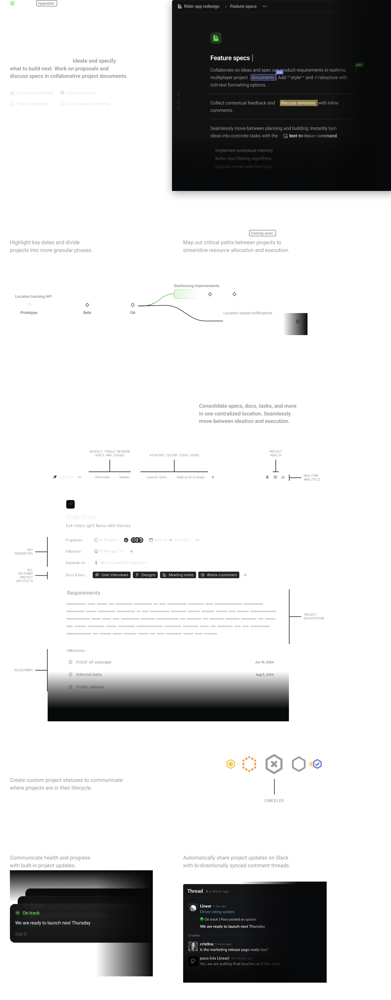

Initiatives
New
Coprdinate strategic Product initiatives


Align everyone on the strategy.
Provide a detailed summary for each initiative and link to resources and related documents.
Monitor progress at the scale.
Quickly see what’s on track, identify blockers, and spot missing project updates.